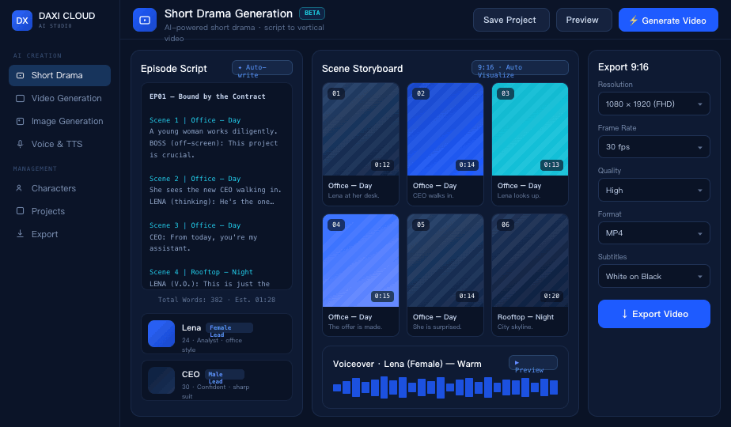

Storyboard Agent
Convert scripts into shot lists, visual prompts, and pacing plans.
AI agent · Video production
Turn content briefs into scripts, storyboards, voiceover prompts, subtitles, task queues, and publish-ready video plans.

Agent workflow
Collect topic, tone, audience, duration, and output channel.
Generate scenes, dialogue, shots, and narration prompts.
Prepare image, video, voice, and subtitle task queues.
Review storyboards, captions, and generated outputs.
Export production-ready vertical video packages.
Convert scripts into shot lists, visual prompts, and pacing plans.
Coordinate model calls for images, video clips, voices, and subtitles.
Track model usage, token costs, and task status by customer.
Submit a request and DAXI operations will help configure model access, task flow, and token packages.